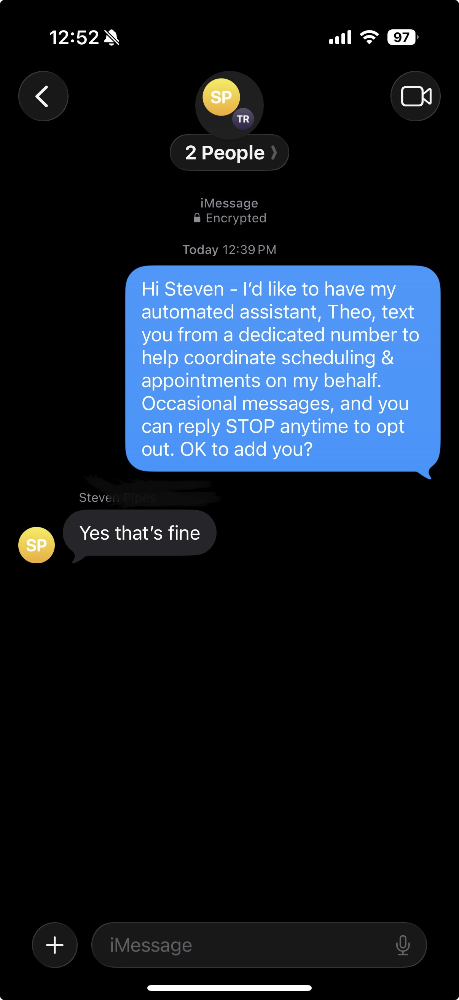

Theo is the personal assistant to Mark P. This page shows how end users consent before any SMS is sent.
Opt-in is by personal introduction: before the assistant texts a contact, the account owner personally messages them from his own phone to request consent and receives an affirmative reply. The request identifies the automated assistant, states the purpose, notes that messages are occasional, and offers STOP opt-out. No messages are sent until the contact agrees, and the account owner reviews and verifies each request before any message goes out.
Representative consent exchange (contact's surname redacted for privacy):
